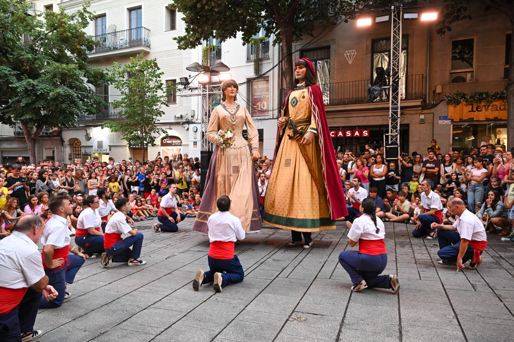
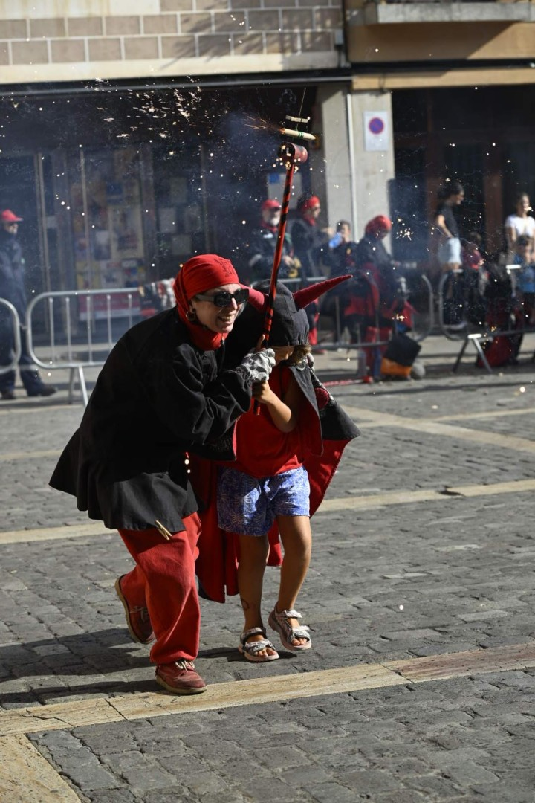

Cultura popularCercavila de Gegants
◷ 25 de juliol · 18:00h
◎ Riera de Mataró
Tarda de somriures, balls i tradició. El cor de Mataró batega amb l'energia dels infants amb tallers, cercaviles i activitats familiars pensades per viure la màgia de Les Santes des de ben d'hora.
Agenda d'actes
Uneix-te a la celebració més gran de Mataró. Comparteix els teus moments amb l’etiqueta #LesSantes2026 i sigues part de la història.
Saber-ne més